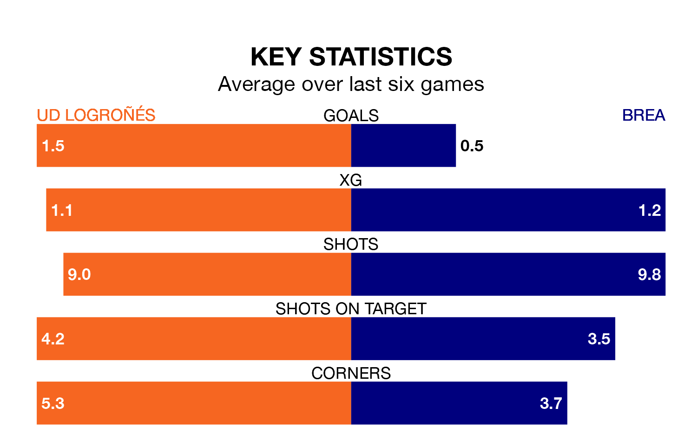

Relegation candidates Brea face a challenge away against high-flying UD Logroñés at the Estadio Nuevo Municipal Las Gaunas on Sunday.
Brea are 17th in the Segunda División RFEF Group 2 table, and have picked up five wins and six draws in their 32 games to date.
Logroñés, meanwhile, are third in the standings with 65 points, having won 18 and drawn 11, and are 11 points behind table-toppers Athletic Club B.
With 63 goals in 32 games so far this season, Logroñés are the league's highest scorers with 2.0 goals per game. And they are conceding fewer than average, letting in 16 goals at a rate of 0.5 per game.
Brea, meanwhile, are below average scorers, with 0.4 goals per game, compared to a league average of 1.1. They have conceded 1.5 goals per game.
The home team are in good form in the Segunda División RFEF Group 2, with four wins and two draws from their last six games.
With a win and five losses over that period, the visitors' form is much worse – they have taken three points from 18, compared to Logroñés's 14.
Logroñés's last match was on Sunday, a 2-0 win against Gernika Club, with Unai García Sebastián getting the goals for Logroñés.
Brea lost 2-0 against Utebo last time out, also on April 21.
Updated: 07:59 (UTC), 26/04/24